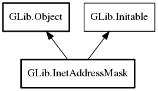

InetAddressMask
Object Hierarchy:
Description:
InetAddressMask represents a range of IPv4 or IPv6 addresses described by a base address and a length indicating how many bits of the base address are relevant for matching purposes.
These are often given in string form. Eg, "10.0.0.0/8", or "fe80::/10".
Namespace: GLib
Package: gio-2.0
Content:
Properties:
Creation methods:
Methods:
Inherited Members:
All known members inherited from class GLib.Object

All known members inherited from interface GLib.Initable